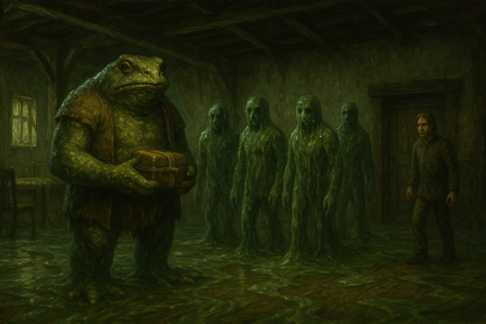

Chapter 4: True Form
Mattington Shattered

Mattington Shattered
15048.11.17
「Welcome to my party house.」Hobb 粗獷的聲音從裡頭傳了出來。冒險者們想了想，便決定走了進去，找了離門口較近的椅子坐了下來，只有 Inu 決定留在外頭，門從後面關了起來。酒館內，冒險者們看著 Hobb 化身成了他真正的模樣—一隻比他們都還要高且壯碩的蛙人—露出了十分開心的表情，手上把玩著包著布的魔法盒子，向冒險者們感謝將盒子送到了他的手裡。他的手下們，則是魚人般的生物，身上全是黏液。同時，Hobb 將一旁的 Jonathan 釋放，表示自己遵守了當時交易的承諾。Jonathan 心驚膽跳的跑到了冒險者身邊，也坐了下來。
在華生將 Tweeter 搬到他們的桌子上後，Tweeter 逐漸甦醒。恍恍惚惚，他感受到自己剛才做了一個夢。夢中，自己穿梭在一片極其潮濕的雨林中，漫無目的。潮濕黏膩的環境，似乎竄出了各種他認不得的生物……
Hobb 邀約冒險者們跟他一起建造個偉大的裝置，並表示自己會每天付 50 枚金幣薪水給他們。在 Hobb 的大方之下，Sugalu、Paladin 和 Tweeter 都表現出了願意配合的態度。華生的態度卻讓 Hobb 感到不妥，因此受到了 Hobb 用他長長舌頭的挑釁，Hobb 並吩咐他的兩個手下將華生制伏，晚點會好好調教調教。
Sugalu 好奇的問著 Hobb 他們究竟要建造什麼，Hobb 則賣著關子，表示這是個偉大的東西，他們只要聽好施令，該做什麼就做什麼。一名魚人同時也吐出了他長長的舌頭，朝著 Paladin 挑釁。對於這群生物感到好奇的 Tweeter 試著用他理解他們所用的語言溝通，詢問了這隻剛才對 Paladin 挑釁的魚人，他們是從哪裡來的？那名魚人表示他們是從深淵（The Deep）來的，不過他們只是跟隨著指示來到這裡，中間怎麼穿越過來，他們已經不記得了。他們認知 Hobb 也是深淵來的生物，但是和他們階級不同，他們不敢違抗 Hobb，但同時 Hobb 對他們也很好，因此沒有對抗他的理由。另外，拉索斯教似乎是和 Hobb 簽訂了契約，他們屬於合作的關係，因此這群魚人也可以說是被拉索斯教給聘用。
沒有進到酒館內的 Inu 繞到了酒館後門，發現後門沒有上鎖，於是繞了進去。後門的倉庫沒有像前門那種黏膩感，隱約也能聽見前門酒館內討論的聲音。不確定該怎麼辦，Inu 於是繞到後門外等待。
Hobb 表示是時候該動工了，用他們的語言和他的手下們喊了幾句後，便轉頭要開鎖，卻發現鎖打不開，於是要 Sugalu 來開。經過了幾番爭辯後，Sugalu 終於轉頭將鎖打開，Hobb 便讓他的黨羽們出發。
走出酒館的後門，Hobb 和他的黨羽們都化回了人形。隊伍後方，一些 Hobb 的手下從倉庫搬了裝有黑色石頭的精緻盒子，便跟上隊伍。最終，一群人走到了當初 Hobb 將 Jonathan 關押的那個房子內。後方的 Inu 也跟上了隊伍，來到了房子前。
根據 Hobb 的指示，幾名手下如工頭般指揮起了其他工人以及剛加入的冒險者們，從房子內搬出了木材，開始加工。同時，兩名押解著華生的惡徒將他帶到了房子內右側的房間，開始用他聽不懂的語言以及長長的舌頭恫嚇著他。來到附近的 Inu 好奇地詢問其中一名工頭他們在做什麼，於是工頭便將他帶到 Hobb 身邊。Hobb 看著人形的 Inu，冷笑著歡迎「小狗」的出現，接著他便讓其中一名工頭將 Inu 帶去看看他的「姊姊」，華生。
看見了 Inu 出現在眼前，房間內正在被恫嚇的華生將門關上，背後長出了翅膀，吸引了關押他的惡徒們的興趣。然而，他利用短暫的時間，飛了起來，從上方的窗戶鑽了出去，躲開了發現他的蹤跡並試圖用木條朝他丟擲的工人，並趕緊飛到附近的高樓（其實只有二樓）樓頂躲藏並休息。
看見飛走的華生，幾名工人試圖追上去。Sugalu 也看見了，大聲呼喊自己也要追上去，幫 Hobb 把他重要的資產追回來。Hobb 感到些許懷疑，讓自己的手下先將 Sugalu 趕回工地。不過 Sugalu 馬上從旁邊繞開，繼續朝著他感覺華生飛的方向跑去。兩名工頭跟在他後面跑，Hobb 見狀，也跟了上來，試圖追上 Sugalu。
發現 Hobb 已經不在附近，Tweeter 和 Paladin 透過心靈感應討論，判斷現在似乎是個可以將現場的工人們除掉的好時機。討論好之後，Tweeter 也將他們的計劃告訴了 Inu，接著 Tweeter 便發出了刺耳的叫聲，幾名工人看起來受到了很大的影響。在 Paladin 和 Inu 的配合下，全場的工人與工頭們全都倒地。為了確保安全，Tweeter 和 Paladin 將看起來比較強壯的工頭們通通補了幾刀，而 Inu 則先跑進了房子內左側的房間，將門關上，暫時傳送回 YHWH 的身邊小小休息。
Sugalu 一路跑，跑了好一陣子，發現 Hobb 與他的黨羽再也追不上了，才開始放慢速度，而此刻，他也跨出了 Sebano 的鎮門口。遠方的 Hobb 從遠處看著 Sugalu，手上拋著他的魔法盒子，然後便轉頭離去。
眼看工地一代的威脅都沒有了，疲憊的 Tweeter 和 Paladin 將死透的工頭們搬了進屋子內，進到左側的房間內，用屍體將門口堵住，做了簡單的休息，直到 Inu 突然憑空出現在他們的眼前。三人經過討論後，決定往 Sebano 鎮門口的方向前進。
隔了好一陣子，另一棟建築物屋頂上的華生，看見 Hobb 繞回了他的酒館去，另外四名他的工人們則靠在街道旁喘氣歇息。不久後，華生看見了 Tweeter、Paladin，和 Inu 等夥伴出現在了他的視野範圍內。同時 Sugalu 也出現在了接到了另一側。華生看見 Tweeter 和 Inu 接手將四名惡徒中的兩名快速擊倒，另外兩名則倉皇的逃亡，卻被堵在路口的 Sugalu 嚇著。隨著冒險者們的集結，最終只剩下一名活口。
在華生從屋頂飛翔下來，降落在僅剩的惡徒面前，表示自己想探聽些消息後，面色慘白的惡徒表示自己願意配合，但是得離酒館越遠越好。話音剛落，他便倒在了地上，嘴角滲出血色，沒有了呼吸。冒險者們看著他的身體，和其他惡徒一樣，漸漸地、漸漸地化為水窪。然後左方傳來熟悉的粗獷的聲音，邀請著他們進到酒館內。
像是受到控制一般，Inu、Tweeter、Sugalu 和華生沒有遲疑的向著酒館走去，感到不對勁的 Paladin 為了夥伴們的安全，也只能跟上了。進到酒館內，木製的桌椅都不見了，整間酒館像是淹滿了黏稠的古怪液體，有著苔蘚的色調。Paladin 身後的門也被關上了。房子內，只剩下 Hobb 把玩著包住的魔法盒子，以及眼神空洞的四名冒險者和 Paladin。
「It’s time to see your true form.」Hobb 微微打開被包緊的魔法盒子，將一隻手伸入，挖出了一坨黏液，讓它滑落在黏稠的地板上。那坨黏液從地板上緩緩升起，漸漸地化成了兩個人型……
Paladin 遲疑著怎麼做。他試著喊醒逐漸被黏液覆蓋的夥伴們，甚至敲打他們，卻苦無成效，就連對著 Hobb 攻擊也沒有任何效果。夥伴們試著掙脫，試著保持清醒，卻逐漸、逐漸失去了意識……
地上冒出的兩坨黏液逐漸化成人型，然後又冒出了兩坨。人型黏液緩緩移向冒險者們，然後開始變形，成為冒險者們的模樣。此刻 Hobb 身邊也出現了一個和他一模一樣的化形，Paladin 甚至無法分辨出何者才是真正的 Hobb。Sugalu、Tweeter，以及華生紛紛在黏液中崩塌、倒下，而被身旁的黏液複製品取代他們的身份，Inu 則在失去意識的前一刻傳送回到他的主人 YHWH 的身邊，以逃過這場災厄。然後門外傳來了敲門聲。
「Paladin，我們趕快逃出去吧！」Paladin 腦中響起熟悉的 Tweeter 的呼喚聲，看著持續傳來敲門聲的酒館門口，對面是敵是友？眼看四名「夥伴」緩步走向門口，Paladin 趕緊跑向門邊，用力扯開被黏液覆蓋住的木門。
此刻 Paladin 眼前的景象令他感到詫異。Sebano 一片屍海，道路上除了斷垣殘壁外，就是屍橫遍野，唯一活生生的人，便是在他面前衣服破爛的 Anna。Paladin 感到困惑，想向 Anna 詢問發生了什麼事，但 Anna 大步走入酒館內，詢問著 Paladin 魔法盒子的去處。Paladin 這才發現 Hobb 與他的分身早已消失了蹤影。
在 Paladin 的帶領下，兩人找遍了整個 Party House，也從後門繞出去，走到之前 Hobb 的工地去。在房子內，他們發現了縮在角落抖動不已的 Jonathan，甚至連話都講不清楚了。Paladin 試著詢問發生什麼事情，Jonathan 只顫抖著他的手，指向 Paladin 的身後已經向外走去的 Anna。Paladin 試著追問，卻得不到他想要的解答。然而，他卻看見 Jonathan 突然抓住了自己的心臟，然後瞬間癱軟。回頭，Paladin 看見回到自己身後的 Anna 緩緩放下自己的手。
「走吧，我還需要你的幫助。」
「那……對了，鎮長呢？」
「那個人已經沒有利用價值了。」
Anna 領著 Paladin，沿路走回 Hobb’s Party House。此時黏液化成的冒險夥伴們早已失去蹤影。Paladin 看著 Anna 從腰際取出了幾罐玻璃小瓶，逡巡了幾番後，蹲了下來，將地上的黏液徒手挖起，裝入玻璃瓶內。來來回回幾次，四瓶玻璃瓶分別在不同角落裝滿，然後他便起身，從大門口走了出去。Paladin 對於 Anna 的行為感到疑惑，但也知道自己就算詢問，也無法從這人口中得到什麼有用的資訊，所以也就靜默了。
跟著 Anna，兩人走回了佈滿傭人屍體的鎮長家。Anna 在客廳正中央用力踩了幾下，「砰」，一扇通往地下的門，就這樣被開啟了。